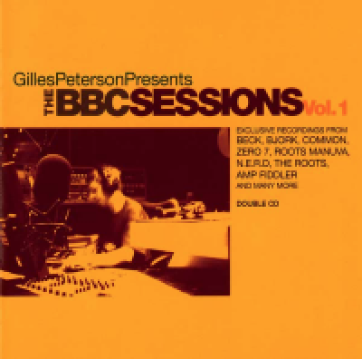

Gilles Peterson: The BBC Sessions Vol. 1
 By
By
October 27, 2016
To this day Gilles Peterson transcends more eclecticism than most music broadcasters on air, and perhaps the only genre continuously omitted from his shows is classical music. Peterson owns Brownswood Records, produces Worldwide Awards, and recently launched his radio station Worldwide FM, which was also featured in the latest Grand Theft Auto sequel, i.e. GTA V. He is a touring DJ and one of the biggest record collectors in the world. Not enough?
Well, the man is also associated with the rise of Acid jazz music, which he popularized back in the 90s via his radio shows on Jazz FM and Kiss FM, as well as former record labels Acid Jazz and Talkin' Loud; Jamiroquai, Incognito, or Erikah Badu—artists Peterson discovered, produced, and brought to daylight.
The notorious northern London-based vinyl junkie and the die-hard Arsenal football club supporter, Peterson, is currently hosting the radio show on BBC Radio 6, too. Not so long ago his show was broadcasted on BBC Radio 1. It was during this time Peterson assembled his double CD compilation: a beautiful sonic landscape crafted within BBC's playgrounds, Maida Vale studios, from a colorful pallet of artists well known to many.
The BBC Sessions Vol. 1 epitomizes Peterson's cosmopolitan attitude towards music at its best: the album includes artists such as Bjork, The Heritage Orchestra, Beck, The Roots, Roisin Murphy, N*E*R*D, and many more. Each of the CD has 14 tracks, making a total of 28 significantly diverse performances. From Jamie Cullum's take on Pharrell Williams' "Frontin" (which is the only track recorded outside the BBC studios) to a swinging number performed by Heavy—the album has its color, which Peterson began shaping back in the 1970s and 1980, in the clubs like Dingwalls and its Sunday afternoon sessions. Thus, a symbolic shadow audible from the past is perhaps best heard on a (soon to be a classic) version of Freddie Hubbard's "Red Clay," where Dwele featuring Roy Hargrove gets involved into an old children game "Simon Says" camouflaged in a trading solos form.
Although being a compilation album, it certainly has that transcending sense of organisms (since all the numbers were recorded live), which most of the compilation albums lack. The album could have benefitted from more instrumental pieces, as the two singer-neglected numbers are very powerful and even edge some of the vocal tracks. Nevertheless, The BBC Sessions Vol. 1 released over ten years ago is something to be picked up and listened to again.
Track Listing: Intro; Telescopic (The Heritage Orchestra); The Audience (The Matthew Herbert Big Band); Who Is It? (Bjork); Dreamy Days (Roots Manuva); Gabrielle (Peven Everett); Kinda New (Spektrum); Romance (Beth Gibbons); Gilles Smiles (Nitin Sawhney); 3am (Plantlife); Braid Your Hair (Jazmine Sullivan); This Room (Fat Freddy's Drop); Improvised Jam (N*E*R*D); Meltin'Pot (The Roots); Unbelievable (Heavy); I'm Doin Fine (Amp Fiddler); This World (Zero 7); Sometimes (Bilal); Grace Under Pressure (Jade Fox); Red Clay (Dwele); Don't Say It (New Sector Movements); Sow Into You (Roisin Murphy); Seedpod (Homelife); The Seed (Cody ChesnuTT); The Corner (Common); Frontin' (Jamie Cullum); Knives and Forks (Kieran Hebden a.k.a. Four Tet and Steve Reid).
Personnel: Gilles Peterson: compilation and mixing.
Year Released: 2005 | Record Label: Ether Sounds